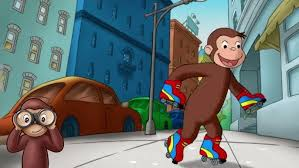

Bienvenido a "Debajo del Árbol"
Un árbol frondoso y gigantesco es mudo e involuntario testigo de la reflexión nostálgica de Fidel Cuba, un hombre de avanzada edad que se cuestiona amargamente la etapa final de su existencia. Su soledad y pesimismo tendrán durante un encuentro inesperado una luz de esperanza, y entenderá que aún al final del camino siempre hay una misión que cumplir.
Objetivos del Sitio
- Compartir la reflexión de la historia.
- Explorar temas de soledad y esperanza.
- Presentar contenido multimedia relacionado.
Temas Clave
- La vejez y la memoria.
- El encuentro inesperado.
- La búsqueda de un propósito final.
